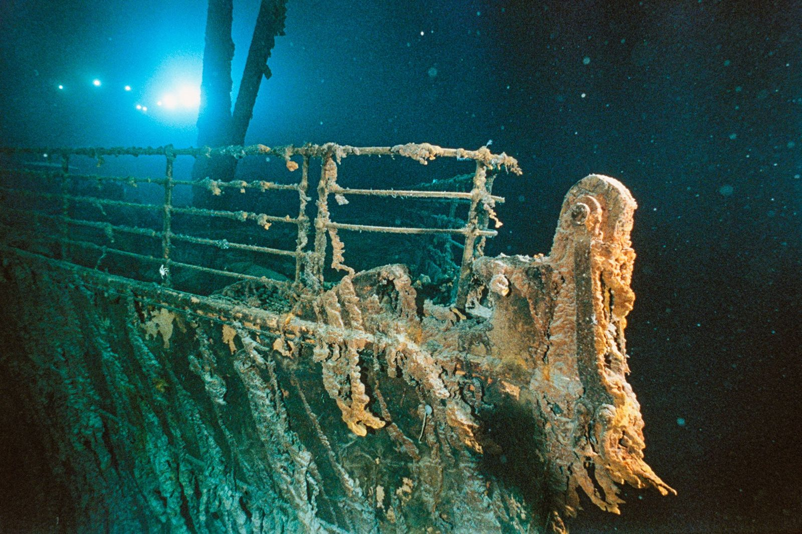

SOBRE A PÁGINA
Esse é uma página feita para relembrar sobre o titanic e sua história
HISTÓRIA
O RMS Titanic foi um navio de passageiros britânico operado pela White Star Line e construído pelos estaleiros da Harland and Wolff, em Belfast. Segunda embarcação da Classe Olympic de transatlânticos, depois do RMS Olympic e seguido pelo HMHS Britannic, foi projetado pelos engenheiros navais Alexander Carlisle e Thomas Andrews. Sua construção começou em março de 1909 e seu lançamento ao mar ocorreu em maio de 1911. O Titanic foi pensado para ser o navio mais luxuoso e mais seguro de sua época, gerando lendas que eram supostamente "inafundáveis". A embarcação partiu em sua viagem inaugural de Southampton com destino a Nova Iorque em 10 de abril de 1912, no caminho passando em Cherbourg-Octeville, na França, e por Queenstown, na Irlanda. Colidiu com um iceberg na proa do lado direito às 23h40 de 14 de abril, naufragando na madrugada do dia seguinte, com mais de 1 500 pessoas a bordo, sendo um dos maiores desastres marítimos em tempos de paz de toda a história. Seu naufrágio destacou vários pontos fracos do projeto, deficiências nos procedimentos de evacuação de emergência e falhas nas regulamentações marítimas. Comissões de inquérito foram instauradas nos Estados Unidos e no Reino Unido, acarretando mudanças nas leis internacionais de navegação, que permanecem em vigor mais de um século depois. Os destroços do Titanic foram procurados por décadas até serem encontrados, em 1985, por uma equipe liderada por Robert Ballard. Ele se encontra a 3 843 metros de profundidade e a 650 quilômetros ao sudeste de Terra Nova, no Canadá. Sua história e naufrágio permanecem no imaginário popular, levando à produção de vários livros e filmes a seu respeito, mais notavelmente o filme Titanic, de 1997. Até hoje é um dos navios mais famosos da história, com seus destroços atraindo várias expedições de exploração ao longo dos anos.
GALERIA
Titanic Antes

Titanic Depois
